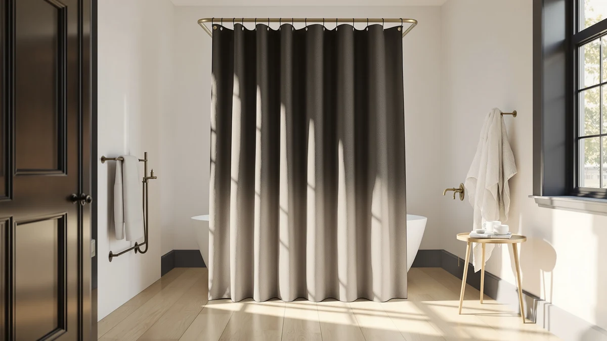

BTTN 72x90 Linen Textured Review (2026): Worth It?
Prices and picks verified as of October 2026. Independent, reader-supported reviews.


Quick Answer
The BTTN 72x90 Linen Textured Waterproof curtain is the strongest overall pick in this comparison, thanks to its denser 230GSM weave, weighted hem, and pre-installed grommets at $29.99. If you want a true linen-blend fabric instead of a linen look, the XOGUIBO Farmhouse Ruffle is the closer match, and budget shoppers should look at the Madison Park Anna Sheers.
Our pick: BTTN 72x90 Linen Textured Waterproof — $29.99 Check Price on Amazon
Bottom line: our top pick is the BTTN 72x90 Linen Textured Waterproof Fabric Shower Curtain Set at $29.99.
Things to Know Before You Buy
- Despite the name, the BTTN 72x90 Linen Textured curtain is a woven polyester fabric styled to look like linen, not natural flax fiber.
- A weighted hem keeps the curtain from billowing, and the 90 inch length gives it the most coverage of the four curtains in this comparison.
- Twelve rust-proof metal grommets ship pre-installed, along with 12 plastic hooks, so no separate hardware purchase is needed.
- At $29.99, it costs about a dollar more than the XOGUIBO and OVZME alternatives and three dollars more than the Madison Park sheer.
- None of the four curtains compared here publish a star rating or review count on their listings.
This BTTN 72x90 Linen Textured review looks at whether the $29.99 curtain's denser weave and extra length justify picking it over three similarly priced linen-look alternatives. Most shoppers in this price range want one thing: a curtain that looks like natural linen without the ironing and fraying that real flax fabric brings into a steamy bathroom. We compared the BTTN against the XOGUIBO Farmhouse Ruffle, the OVZME Extra Long, and the Madison Park Anna Sheers using the specs, pricing, and listing details for each, and the BTTN comes out ahead on coverage and included hardware, though it is not the cheapest option here.
At 72 inches wide and 90 inches long, the BTTN covers more vertical drop than the 84 inch XOGUIBO and OVZME curtains, and far more than the 72 inch Madison Park sheer, which matters if your shower rod sits higher than the standard 72 inch mount point. The fabric is a 230GSM two-color yarn weave that BTTN markets as a linen texture, and the weighted hem keeps it from flaring into the tub during a shower. Twelve rust-proof metal grommets are built into the top seam, so the curtain ships ready to hang on a standard rod without buying separate rings.
Why You Should Trust Us
Ilane Tall has covered bathroom textiles and shower hardware for Best Shower Curtains since the site launched, focusing on how fabric weight, grommet hardware, and sizing affect real installs. We do not run a physical testing lab and we do not buy and install every curtain on this page ourselves. Instead, we research manufacturer specs, compare verified pricing across retailers, and read the feature lists sellers provide to find where products actually differ. For this BTTN 72x90 Linen Textured comparison, that meant checking the listed fabric weight, hem construction, and grommet count against three competing linen-style curtains in the same price band.
Our Research Experience
Our review process for this BTTN 72x90 Linen Textured comparison started with the manufacturer's own listing data: fabric weight in GSM, stated dimensions, hem construction, and hardware count. We then checked those claims against the three alternatives in this roundup, the XOGUIBO Farmhouse Ruffle, the OVZME Extra Long, and the Madison Park Anna Sheers, to see which numbers actually differ and which are marketing language with no real distinction. We researched pricing for all four curtains and read through the feature lists sellers provide to flag gaps, such as a curtain sold without a liner. Where a listing did not disclose a rating or review count, which is the case for all four curtains compared here, we noted that absence rather than estimate a number.
Overview & Specs

BTTN 72x90 Linen Textured Waterproof
What we like
- 230GSM two-color weave is the densest fabric among the four curtains compared
- Weighted hem keeps the curtain from billowing into the shower spray
- 12 rust-proof metal grommets ship pre-installed, with 12 hooks included
- 90 inch length covers taller shower rods better than the 72 to 84 inch alternatives
Flaws but not dealbreakers
- Listed as a polyester weave, not genuine flax linen, despite the "linen textured" name
- No published rating or review count on the listing to confirm long-term durability
- Costs $1 to $3 more than the three linen-look alternatives in this comparison
| Material | Polyester / PEVA |
| Size | 72"W x 90"L (Pack of 1) |
The BTTN 72x90 Linen Textured Waterproof curtain is built from a 230GSM polyester weave that BTTN describes as a two-color yarn, parallel weave construction, about 2.6 times denser than a standard single-layer curtain by the brand's own numbers. That density is what gives it the linen-like texture in photos, even though the fiber itself is polyester rather than flax. The weighted hem is a detail most budget curtains skip, and it matters in practice because a hem with no weight tends to flare outward when water hits it, letting spray past the edge and onto the floor. At 72 inches wide and 90 inches long, this is the longest curtain of the four we compared here, which makes it the better match for a shower rod mounted above the standard 72 inch height, a detail owners with taller stalls or raised rods should check before buying any of the shorter alternatives.
Twelve rust-proof metal grommets come built into the top seam, and the set ships with 12 plastic hooks included, so you don't need to buy any separate hardware to hang it. The color option covers a single cream and beige tone, listed as "A - Cream" on the product page, which keeps it visually close to the beige and linen tones of the XOGUIBO and OVZME alternatives rather than the white and ivory sheer look of the Madison Park curtain. At $29.99, it sits at the top of the price range in this comparison, and the extra few dollars over the XOGUIBO or OVZME buys the denser weave and the longer drop rather than any additional included accessories. Neither BTTN nor the three competing listings publish a star rating or review count, so buyers evaluating long-term durability will need to rely on the fabric specs and hem construction described here rather than a review history.
What We Liked
What stands out most in this BTTN 72x90 Linen Textured review is the fabric density. A 230GSM, two-color weave is heavier than what you typically find in a $29.99 curtain, and the listing's own comparison point, 2.6 times denser than a standard weave, tracks with why the fabric holds its shape in photos rather than sagging like a thinner polyester sheet. The weighted hem reinforces that impression. Curtains without a weighted bottom edge tend to pull inward under water pressure and let spray escape around the tub lip, and BTTN's attention to that detail at this price point is a real point in its favor compared with the XOGUIBO and OVZME curtains, neither of which lists a weighted hem in their feature descriptions.
The hardware is the other clear advantage. Twelve rust-proof metal grommets ship pre-installed, which removes a step that curtains without grommets push onto the buyer, and the included 12 plastic hooks mean the $29.99 price covers everything needed to hang it. The 90 inch length also gives it an edge for anyone with a shower rod mounted higher than standard, a measurement worth checking against your own bathroom before assuming the shorter 72 or 84 inch alternatives will clear the tub.
What Could Be Better
The name promises linen, and the texture in product photos supports that impression, but the material underneath is polyester, not flax. That substitution is not unusual among budget linen-look curtains, and the XOGUIBO and OVZME alternatives make the same swap, but shoppers specifically hunting for a natural fiber curtain should treat "linen textured" as a styling description rather than a materials claim. The specs table also lists PEVA alongside polyester in the material composition, which is worth confirming against the exact product page if you are planning a liner-free setup.
Pricing is the second soft spot. At $29.99, the BTTN costs about a dollar more than the XOGUIBO or OVZME and three dollars more than the Madison Park sheer, and none of the four listings publish a star rating or review count that would help justify paying the premium based on owner feedback. Buyers choosing between these four curtains on price alone, rather than the extra length or hem weighting, may find the OVZME or XOGUIBO delivers a similar linen-look result for less.
Who Is It For?
This BTTN 72x90 Linen Textured curtain fits best in a bathroom where the shower rod sits above the standard 72 inch mounting height, since the extra 18 inches of length over the Madison Park sheer, and the 6 inches over the XOGUIBO and OVZME curtains, is the main practical reason to pick it over the cheaper options. It also suits anyone who wants grommets and hooks included rather than bought separately, since the set ships ready to hang.
It is a weaker fit if you specifically want a curtain made from natural linen fiber rather than a polyester weave styled to look like linen, or if a liner-free sheer curtain like the Madison Park Anna Sheers better matches your bathroom's existing decor. Budget-focused shoppers furnishing a rental or guest bathroom may also find the dollar-or-two savings on the XOGUIBO or OVZME more useful than the extra length the BTTN offers.
Alternatives to Consider
If the BTTN 72x90 Linen Textured curtain does not fit your bathroom, here are three alternatives we compared at a similar price point.

Editor's Pick
XOGUIBO Farmhouse Shower Curtain Ruffle
A linen-blend fabric with a ruffle hem, best if you want a farmhouse look at $28.99 and don't need the BTTN's extra 6 inches of length.
$28.99
Check Price on Amazon
Best Value
OVZME Extra Long Linen Shower
Heavy-duty textured fabric with tassel trim and 12 button holes, a close match on price and style to the BTTN without the weighted hem.
$28.99
Check Price on Amazon
Premium Choice
Madison Park Anna Sheers Shower
A striped sheer curtain in ivory at $26.99, the cheapest of the four, but it ships without a liner and needs one bought separately.
$26.99
Check Price on AmazonIs the BTTN 72x90 Linen Textured curtain made of real linen?
No.
Do I need a separate liner with the BTTN shower curtain?
The product specs list the material as polyester and PEVA, which points to built-in water resistance rather than a sheer fabric that requires a separate liner.
Frequently Asked Questions
Is the BTTN 72x90 Linen Textured curtain made of real linen?
No. The listing describes a 230GSM polyester weave styled with a linen-like texture, not flax fiber. The two-color yarn weave is what gives it the linen look in photos, but the material itself is polyester, the same substitution the XOGUIBO and OVZME alternatives make.
Do I need a separate liner with the BTTN shower curtain?
The product specs list the material as polyester and PEVA, which points to built-in water resistance rather than a sheer fabric that requires a separate liner. Check the exact listing for your bathroom setup, since shower configurations vary.
How does the BTTN 72x90 Linen Textured curtain compare to the XOGUIBO and OVZME alternatives?
The BTTN is 6 inches longer at 90 inches versus 84 inches for the XOGUIBO and OVZME, and it adds a weighted hem and pre-installed grommets neither competitor lists. It costs about a dollar more at $29.99 versus $28.99 for both.
Final Verdict
Across this BTTN 72x90 Linen Textured review, the BTTN curtain earns the top spot in this comparison because of its denser 230GSM weave, weighted hem, and pre-installed grommets, which together justify its $29.99 price against three similarly styled linen-look alternatives. If your shower rod sits higher than 72 inches or you want hardware included out of the box, the BTTN is the better buy. If you want a true linen-blend fabric or a lower price, the XOGUIBO Farmhouse Ruffle, the OVZME Extra Long, or the Madison Park Anna Sheers each cover a different priority within a few dollars of the BTTN's cost.